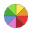

14.1. The Style Manager
14.1.1. The Style Manager dialog
The Style Manager is the place where you can manage and create
generic style items. These are symbols, color ramps, text formats or label
settings that can be used to symbolize features, layers or print layouts.
They are stored in the symbology-style.db database under the active
user profile and shared with all the project files
opened with that profile.
Style items can also be shared with others thanks to the export/import
capabilities of the Style Manager dialog.
You can open that modeless dialog either:
from the
 menu
menuwith the
Style Manager button from the Project toolbaror with the
Style Manager button from a vector
menu (while configuring
a symbol or formatting a text).

Fig. 14.1 The Style Manager
14.1.1.1. Organizing style items
In the upper left corner of the Style Manager dialog, within
the drop-down menu, you can choose the style database you want to connect to.
If you choose Default you will be connected to the default style database
where you can find all available default style items and the ones that you saved in this database.
Choosing Project Styles will connect you to the Project Style database
where you can find only symbols that you saved in this database.
If you created more style databases, they will be listed in the drop-down menu.
There are also options to  Add existing style database to project
and
Add existing style database to project
and  Create new style database (see more Style database).
Create new style database (see more Style database).
For each style database, you can organize the elements into different categories, listed in the panel on the left:
Favorites: displayed by default when configuring an item, it shows an extensible set of items;
All: lists all the available items for the active type;
Tags: shows a list of labels you can use to identify the items. An item can be tagged more than once. Select a tag in the list and the tabs are updated to show only their items that belong to it. To create a new tag you could later attach to a set of items, use the Add Tag… button or select the
Add Tag…
from any tag contextual menu;Smart Group: a smart group dynamically fetches its symbols according to conditions set (see eg, Fig. 14.2). Click the Add Smart Group… button to create smart groups. The dialog box allows you to enter an expression to filter the items to select (has a particular tag, have a string in its name, etc.). Any symbol, color ramp, text format or label setting that satisfies the entered condition(s) is automatically added to the smart group.

Fig. 14.2 Creating a Smart Group
Tags and smart groups are not mutually exclusive: they are simply two different ways to organize your style elements. Unlike the smart groups that automatically fetch their belonged items based on the input constraints, tags are filled by the user. To edit any of those categories, you can either:
select the items, right-click and choose and then select the tag name or create a new tag;
select the tag and press . A checkbox appears next to each item to help you select or deselect it. When selection is finished, press .
select the smart group, press and configure a new set of constraints in the Smart Group Editor dialog. This option is also available in the contextual menu of the smart group.
To remove a tag or a smart group, right-click on it and select the  Remove button. Note that this does not delete the items grouped in the
category.
Remove button. Note that this does not delete the items grouped in the
category.
The Style Manager dialog displays in its center a frame with previewed items organized into tabs:
All for a complete collection of point, linear and surface symbols and label settings as well as predefined color ramps and text formats;
 Marker for point symbols only;
Marker for point symbols only; Line for linear symbols only;
Line for linear symbols only; Fill for surface symbols only;
Fill for surface symbols only; Color ramp;
 Text format to manage text formats,
which store the font, color, buffers, shadows, and backgrounds of texts
(i.e. all the formatting parts of the label settings, which for instance can
be used in layouts);
Text format to manage text formats,
which store the font, color, buffers, shadows, and backgrounds of texts
(i.e. all the formatting parts of the label settings, which for instance can
be used in layouts); Label settings to manage label settings, which include the text formats and some layer-type specific
settings such as label placement, priority, callouts, rendering…
Label settings to manage label settings, which include the text formats and some layer-type specific
settings such as label placement, priority, callouts, rendering… Legend Patch Shapes to manage custom legend patch
shapes, which include Marker, Line and
Fill geometries.
Legend Patch Shapes to manage custom legend patch
shapes, which include Marker, Line and
Fill geometries. 3D Symbols to configure symbols with 3D properties (extrusion, shading, altitude, …) for the features to render
in a 3D Map view
3D Symbols to configure symbols with 3D properties (extrusion, shading, altitude, …) for the features to render
in a 3D Map view
You can arrange the Styles in  Icon View or in
Icon View or in
 List View on the bottom right side. In both views
the tooltip shows a larger instance of the style.
The thumbnail size slider at the left of the icons helps you adjust the actual
thumbnail sizes in the dialog, for a better preview of the symbols!
List View on the bottom right side. In both views
the tooltip shows a larger instance of the style.
The thumbnail size slider at the left of the icons helps you adjust the actual
thumbnail sizes in the dialog, for a better preview of the symbols!
14.1.1.2. Adding, editing or removing an item
As seen earlier, style elements are listed under different tabs whose contents depend on the active category (tag, smart group, favorites…). When a tab is enabled, you can:
Add new items: press the
Add item button and configure the
item following symbols, color ramps or text format and label builder description.Modify an existing item: select an item and press
 Edit
item button and configure as mentioned above.
Edit
item button and configure as mentioned above.Delete existing items: to delete an element you no longer need, select it and click
Remove item (also available through right-click).
The item will be deleted from the local database.
Note that the All tab provides access to these options for every type of item.
Right-clicking over a selection of items also allows you to:
Add to Favorites;
Remove from Favorites;
and select the appropriate tag or create a new one to use; the currently assigned tags are checked;
Clear Tags: detaching the symbols from any tag;
Remove Item(s);
Edit Item: applies to the item you right-click over;
Copy Item;
Paste Item …: pasting to one of the categories of the style manager or elsewhere in QGIS (symbol or color buttons)
Export Selected Symbol(s) as PNG… (only available with symbols);
Export Selected Symbol(s) as SVG… (only available with symbols);
14.1.1.3. Sharing style items
The Import/Export tool, at the left bottom of the Style Manager dialog, offers options to easily share symbols, color ramps, text formats and label settings with others. These options are also available through right-click over the items.
{kind=link}
Exporting items
You can export a set of items to an .XML file:
Expand the Import/Export drop-down menu and select
 Export Item(s)…
Export Item(s)…Choose the items you’d like to integrate. Selection can be done with the mouse or using a tag or a group previously set.
Press Export when ready. You’ll be prompted to indicate the destination of the saved file. The XML format generates a single file containing all the selected items. This file can then be imported in another user’s style library.

Fig. 14.3 Exporting style items
When symbols are selected, you can also export them to .PNG or
.SVG. Exporting to .PNG or .SVG (both not available for
other style item types)
creates a file for each selected symbol in a given folder. The SVG folder can be
added to the SVG paths in menu of another user, allowing him direct access to all these symbols.
Importing items
You can extend your style library by importing new items:
Expand the Import/Export drop-down menu and select
 Import Item(s) at the left bottom of the dialog.
Import Item(s) at the left bottom of the dialog.In the new dialog, indicate the source of the style items (it can be an
.xmlfile on the disk or a url).Set whether to
 Add to favorites the items to import.
Add to favorites the items to import.Check
Do not import embedded tags to avoid the import
of tags associated to the items being imported.Give the name of any Additional tag(s) to apply to the new items.
Select from the preview the symbols you want to add to your library.
And press Import.

Fig. 14.4 Importing style items
Using the Browser panel
It’s also possible to import style items into the active user profile style database directly from the Browser panel:
Select the style
.xmlfile in the browserDrag-and-drop it over the map canvas or right-click and select Import Style…
Fill the Import Items dialog following Importing items
Press Import and the selected style items are added to the style database
Double-clicking the style file in the browser opens the Style Manager dialog showing the items in the file. You can select them and press Copy to Default Style… to import them into the active style database. Tags can be assigned to items. Also available through right-click, Open Style… command.

Fig. 14.5 Opening a style items file
The dialog also allows to export single symbols as .PNG or .SVG
files.
Using the online repository
The QGIS project maintains a repository with a collection of styles shared by
QGIS users. This is available at https://plugins.qgis.org/styles and can be
accessed from the Style Manager dialog, pressing the  Browse Online Styles button at the bottom.
Browse Online Styles button at the bottom.
From that repository, you can:
Browse and search for any style items, based on their type or name
Download the style file and unzip it
Load the
.xmlbased file into your style database in QGIS, using any of the aforementioned import methods.
14.1.2. Setting a Color Ramp
The Color ramp tab in the Style Manager dialog helps you preview different color ramps based on the category selected in the left panel.
To create a custom color ramp, activate the Color ramp tab and click the
Add item button. The button reveals a drop-down list to
choose the ramp type:
Gradient: given a start and end colors, generates a color ramp which can be continuous or discrete. With double-clicking the ramp preview, you can add as many intermediate color stops as you want. Click on the color stop indicator and under Gradient stop you can:
adjust its Relative position from the color ramp start. Also possible dragging the indicator with the mouse, or pressing the arrow keys (combine with Shift key for a larger move)
specify the color model to use when interpolating between colors: it can be RGB, HSL or HSV. In some circumstances, this option can help avoid desaturated mid tones, resulting in more visually pleasing gradients.
set the direction which the interpolation should follow for the Hue component of a HSL or HSV color specification. It can be Clockwise or Counterclockwise.
set the color properties
remove the color stop pressing Delete stop or DEL
The Plots group provides another graphical way to design the color ramp, changing the position or the opacity and HSL components of the color stops.

Fig. 14.6 Example of custom gradient color ramp with multiple stops
Hint
Drag-and-drop a color from a color spot onto the gradient ramp preview adds a new color stop.
Color presets: allows to create a color ramp consisting of a list of colors selected by the user;
Random: creates a random set of colors based on range of values for Hue, Saturation, Value and Opacity and a number of colors (Classes);
Catalog: ColorBrewer: a set of predefined discrete color gradients you can customize the number of colors in the ramp;
or Catalog: cpt-city: an access to a whole catalog of color gradients to locally save as standard gradient. The cpt-city option opens a new dialog with hundreds of themes included ‘out of the box’.

Fig. 14.7 cpt-city dialog with hundreds of color ramps
14.1.3. Creating a Legend Patch Shape
To create a new Legend Patch Shape, activate the Legend Patch Shapes tab and
click the Add item button. The button reveals a drop-down
list to choose the geometry type:
Marker Legend Patch Shape…: to use with point geometries.
Line Legend Patch Shape…: to use with line geometries.
Fill Legend Patch Shape…: to use with polygon geometries.
All three options will show the same dialog.

Fig. 14.8 Create a new Legend Patch Shape
Only the shape type and displayed legend patch shapes will differ regarding to the chosen geometry type. The following options will be available:
Shape: define the shape of the legend patch shape as a WKT string. Single and multipart geometries may be used, but no GeometryCollection.
 Preserve aspect ratio
Preserve aspect ratio- Icon View or List View of
available legend patch shapes, filtered by tags.
When the new Shape is defined you can Save Legend Patch Shape… or press OK, which will both lead to the same dialog.

Fig. 14.9 Save a new Legend Patch Shape
Here you have to choose a name, tags to describe the shape and if it should be added to favorites.
If you press Save…, the shape is added to the list and you are directed back to the New Legend Patch Shape dialog to keep creating new shapes.